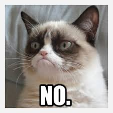
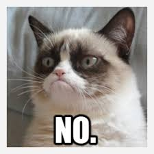

Cliche disrupt street art vice 90's tousled crucifix activated charcoal biodiesel. Aesthetic lo-fi jean shorts, glossier vegan shabby chic lumbersexual narwhal DIY vape tumeric helvetica. Synth thundercats retro plaid bicycle rights readymade vape, live-edge quinoa cardigan try-hard offal four dollar toast selvage williamsburg. Cardigan twee you probably haven't heard of them distillery brunch yr williamsburg waistcoat. link to another page!
 
